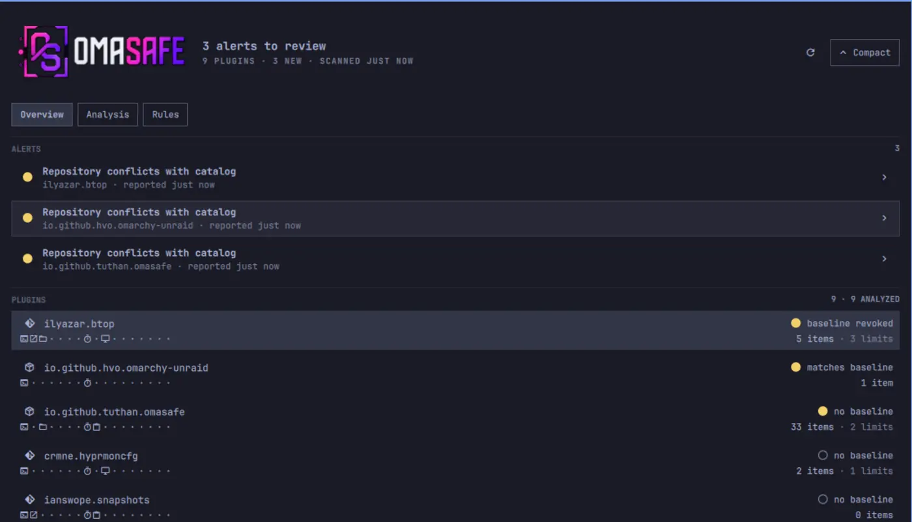

NEW
[STATUS: ONLINE]
[ PROJECT: OMASAFE CLI ]
Know what your system can do. Catch what quietly changed.
A bounded, evidence-first review engine for Omarchy Linux, written in Rust. It produces versioned reports with identity, evidence, and coverage attached, pins trust baselines for installed plugins, and scans public GitHub candidates before anything touches your shell. It never labels a plugin safe or malicious, never executes plugin code, and runs unprivileged.
- Plugins — exact revisions, shipped payloads, capabilities, and drift from a pinned trust baseline.
- Host — encryption, firewall, updates, listeners, kernel and package state, persistence. Reported as state, not a score.
- Candidates — GitHub URLs, Git revisions, and pasted install commands scanned before install.
curl --fail --proto '=https' --tlsv1.2 -L https://raw.githubusercontent.com/tuthan/omasafe/v0.3.3/scripts/install-cli.sh -o install-cli.sh
less install-cli.sh && bash install-cli.sh --version latest